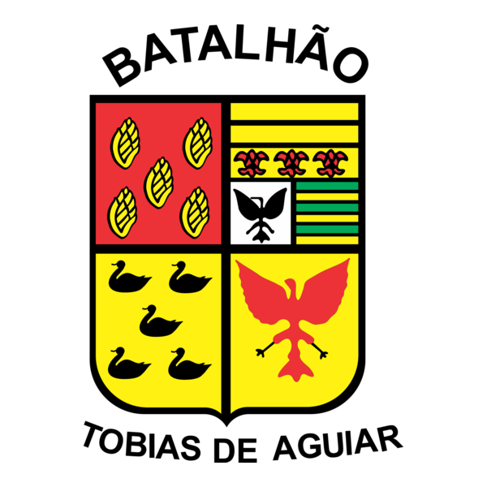

ROTALEGACY ROLEPLAYEste portal organiza as rotinas da ROTA no servidor Legacy Roleplay, dentro do Multi Theft Auto. Aqui ficam reunidos os serviços para cidadãos e os módulos internos da equipe policial, com acesso interno protegido por login.